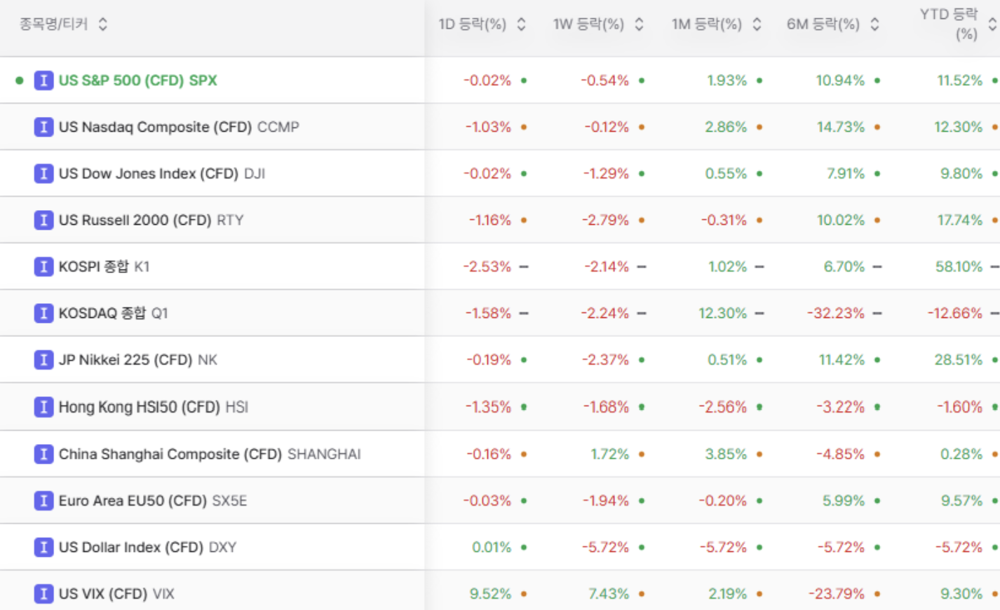
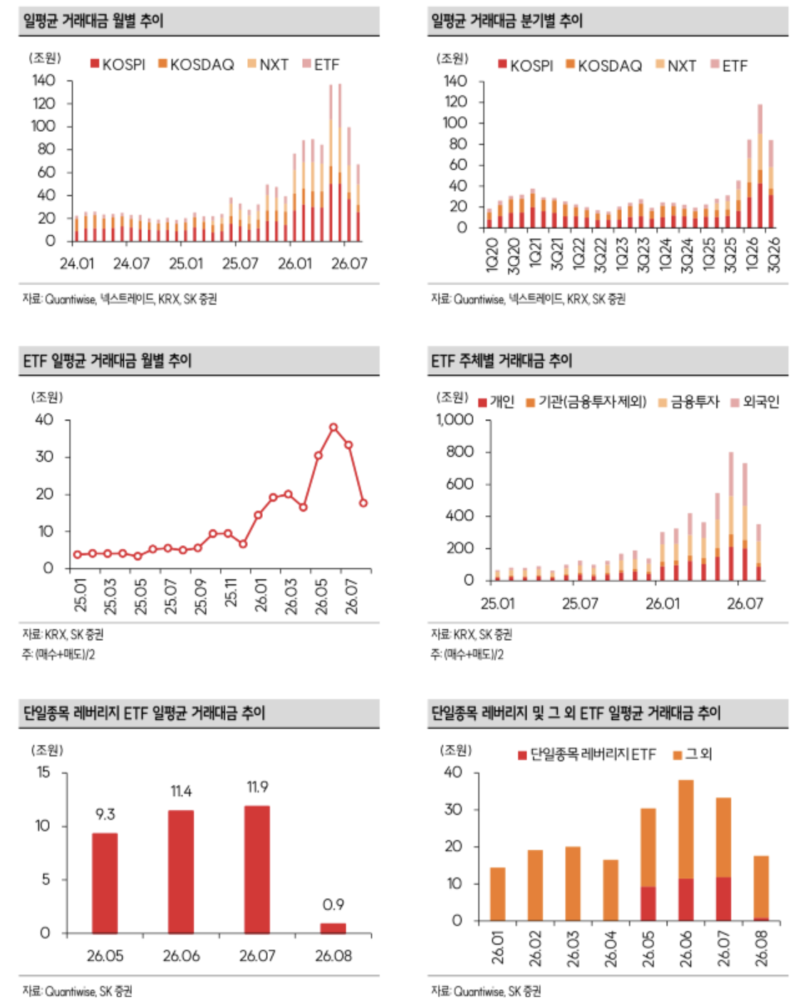
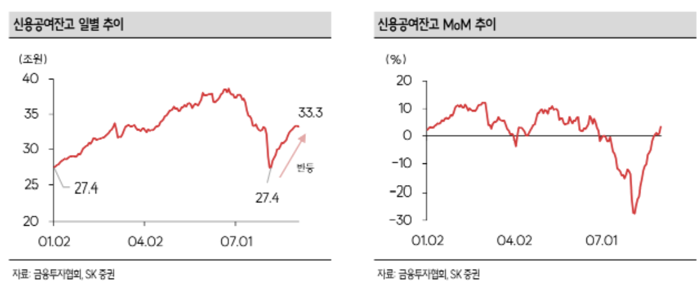

서인원 드림
Market Letter
갈피를 잃은 시장
안녕하세요.
서인원입니다.
엄청난 급락도 한 달 전의 일이 되어 어느덧 8월을 지나 9월에 들어섰습니다. 우리나라 주식시장은 상반기와 완연히 다른 모습입니다. 급락을 온전히 회복하지 못한 가운데 거래대금과 투자자들의 관심도 함께 줄었습니다. 수치뿐 아니라 주변 투자자들의 관심사에서도 주식이 조금 멀어진 것을 체감하게 됩니다.
환율과 금리도 마냥 편안한 조합은 아닙니다. 달러·원 환율은 1,400원 아래로 내려왔고, 채권금리도 급격히 상승하고 있습니다. 패닉성 매도와 레버리지 청산을 거친 뒤 반등은 나왔지만, 시장의 색깔은 분명 달라졌습니다.
주요 시장 흐름
9월 초 기준 주요 글로벌 지수의 기간별 흐름입니다. 한국 시장은 연초 이후의 높은 누적 수익률과 달리, 최근의 관심과 거래 강도는 약해진 모습입니다.

자료: 사용자 제공 시장 화면. 기간별 수익률은 화면 기준이며 기준시점에 따라 달라질 수 있습니다.
8월 주식시장은?
7월 급락으로 크게 눌렸던 코스닥의 회복이 두드러진 8월이었습니다. 반면 코스피는 7,000선 돌파를 시도할 때마다 힘이 약해지는 모습이었습니다. 일부 바이오·2차전지 코스닥 종목의 상승이 지수를 끌어올렸지만, 개별 종목을 보면 아직 회복이 충분하지 않은 기업이 더 많았습니다.
거래대금도 6월과 7월에 비해 크게 줄었습니다. 최근 일평균 거래대금은 30~40조원 수준으로 낮아졌고, 단일종목 레버리지 ETF 거래도 8월 들어 급감했습니다. 이는 단순한 숫자 변화라기보다, 시장 참여자의 위험 선호가 낮아졌다는 신호로 볼 필요가 있습니다.
거래대금과 위험 선호의 변화
급락 이후 시장 전체와 ETF의 거래 강도는 빠르게 낮아졌습니다. 과도한 레버리지의 축소는 긍정적일 수 있지만, 새 상승 추세를 만들 만큼의 폭넓은 참여가 돌아왔는지는 별도로 확인해야 합니다.

자료: Quantwise, 넥스트레이드, KRX, SK증권 (사용자 제공 이미지)
쏠림과 소외, 그리고 본질
쏠림
7월 레터에서 하반기는 상반기와 다를 수 있다고 말씀드렸습니다. 코스피가 다시 높은 전고점을 의미 있게 넘어서기 위해서는 그에 걸맞은 투자자의 거래와 확신이 필요합니다. 그러나 7월 말 급락은 투자심리를 약화시켰고, 그 심리가 회복되기에는 시간이 필요해 보입니다.
이번 쏠림을 복기해보는 일은 다음 쏠림을 만났을 때 도움이 됩니다. 시장의 열기와 함께하되, 내가 만족할 수 있는 기준을 정하고 남은 몫은 보내줄 수 있어야 합니다. 한 번에 실행하기 어렵다면 분할로 대응해도 좋습니다.
소외, 그리고 본질
투자의 본질은 결국 괴리를 이용해 수익을 내는 데 있다고 생각합니다. 잘하고 있음에도 시장의 관심에서 멀어진 회사는 시장의 색깔이 바뀔 때 다시 주목받을 수 있습니다. 회사의 본질은 자본을 가지고 이익을 창출하는 것이고, 잘하는 회사는 같은 자본으로도 더 많은 이익을 지속가능하게 만들어냅니다.
올해 메모리 업체의 실적 기대가 커지며 관심은 삼성전자와 SK하이닉스에 집중됐습니다. 실적이 뒷받침된 상승이었지만, 결국 시장은 ‘얼마나, 언제까지 유지될 수 있는가’를 묻게 됩니다. 저는 이 질문에 답할 수 있는 가격 결정력·경쟁력·현금창출력을 가진 회사를 계속 살피고자 합니다.
앞으로는?
매크로 상황도 우호적이지 않고, 시장 역시 갈피를 잡지 못하고 있습니다. 그렇다고 완전히 시장을 떠날 이유도 없습니다. 다만 감당할 수 있는 범위 안에서 비중을 노출하고, 기업의 본질과 실적의 지속성을 확인하며 대응해야 합니다.
핵심 종목은 유지하되, 반도체 Q 사이클의 수혜가 확산될 수 있는 소부장도 함께 살피겠습니다.
매출과 이익을 꾸준히 성장시키고, 가격 결정력과 경쟁력을 가진 회사
지수 반등만 보고 접근하기보다, 실적과 수급이 확인되는 종목만 제한적으로 보겠습니다.
한 번에 전부 행동할 필요는 없습니다. 시장이 다시 뚜렷한 방향을 만들기 전까지는 현금과 투자 비중을 함께 관리하고, 보유 종목이 처음 투자한 이유를 계속 충족하는지 점검하는 것이 중요합니다.
신용융자 잔고의 반등
급락 과정에서 줄었던 신용융자 잔고는 일부 반등했습니다. 단기 반등이 새로운 레버리지 확대와 결합되는지, 혹은 건전한 위험선호 회복으로 이어지는지는 계속 점검할 변수입니다.

자료: 금융투자협회, SK증권 (사용자 제공 이미지)
읽어볼 만한 글 모음
시장과 투자, 어려운 시기 속 태도에 대해 다시 생각해볼 만한 글을 골랐습니다. 외부 글은 각 작성자의 개인 의견이며, 투자 판단 전에는 본인의 투자성향과 위험요인을 함께 확인하시기 바랍니다.
평균회귀를 믿기보다 가격을 만든 수요와 공급, 그리고 변화의 원인을 살펴보게 하는 책 리뷰입니다.
농구천재: [Review] 살 것인가, 팔 것인가, 버틸 것인가.긴 호흡의 투자에서 무엇을 핵심 근거로 삼고, 불필요한 위험을 어떻게 줄일지 생각해볼 수 있는 글입니다.
천영록: stay around 하는 투자 원칙8월 반등을 강한 추세 전환보다 섹터 순환으로 해석하며, 비중과 리밸런싱을 되짚어 본 기록입니다.
골드핑거: 26년 8월 복기, 급락 뒤 약한 반등급락과 반등을 겪으며 레버리지·분할 접근·리밸런싱의 원칙을 복기한 글입니다.
너쟁이: 8월을 마감하며어려운 시장 상황에서 보유 종목이나 포트폴리오 대응에 대해 상의하고 싶으시거나 제 의견이 궁금하시다면 언제든 편하게 연락 주시기 바랍니다.
감사합니다.
서인원 드림